Talk to your Mac.
Relay does the rest.
A menu bar assistant that opens apps, writes notes and reminders, reads your calendar, clicks through interfaces and drives Firefox. It also types what you say into any app, with dictation that never leaves your Mac. No API key: it runs on the Claude plan you already have.
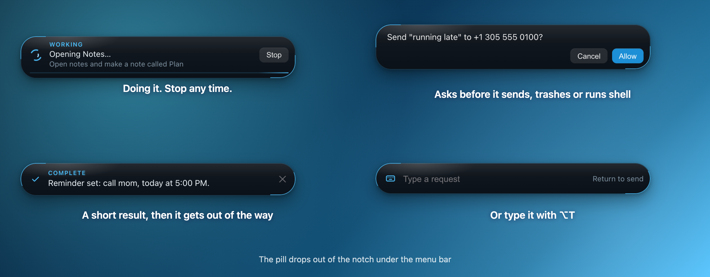
Everything you say, done
Hold a key, talk, let go. Relay figures out whether it is a quick command or something that needs a model, then does it.
Ask with your voice
Tap or hold Right ⌥, say what you want, and a pill drops out of the notch with a short result. Prefer typing? ⌥T.
Dictate anywhere
Hold Right ⌘ and your words are typed where your cursor is. Spoken "new line", "scratch that", word fixes and per-app styles included.
Instant commands
Timers, music, volume, brightness, dark mode, notes, reminders, open apps and sites. About a third of a second, no model call, and "undo that" works.
Acts in your apps
Notes, Reminders, Calendar, Messages, Finder, the clipboard, screen and accessibility tree, plus an optional Firefox extension for tabs and pages.
Shows you, not just tells you
Ask where something is and Relay points at it, circles it, or walks you through the steps on your own screen. Click the outlined spot, or say "next", to go on.
A reactor that listens, and "Hey Jarvis"
A big Jarvis reactor opens in the middle of your screen and follows your voice, then shrinks to the corner while it works. Say your wake phrase to start, or hold a key and circle something on screen to ask about it. Name a task once and Relay repeats it with no model.
Circle it, then ask
Hold a key, move the pointer round anything on screen, let go and ask. Relay looks at exactly what you marked. A small ring with a cursor triangle follows your pointer and traces what it draws.
Holograms you can hold
Ask for a skull, an engine or a rocket and a glowing 3D model floats on your screen. Turn it, pull it apart, point at a piece and ask what it is.
Design it by voice
Say "make a box with a hole through it" and refine it with your hands or your voice. Export STL, 3MF or STEP and send it to your slicer.
Control it with your hands
Use the camera to move, turn, resize and pull holograms apart in the air. Off until you switch it on; the video never leaves your Mac.
On your phone too
Open any hologram on your phone through Relay Remote, turn it with a finger, and save it as STL, 3MF or STEP.
Finds and tidies your files
Find a file with previews, or ask Relay to sort a messy folder. It shows where everything goes first, moves only when you confirm, and can undo. It never deletes.
Connects your other apps
Paste one Composio or MCP address and Relay can read Gmail, Slack, GitHub and more. Reading runs; sending or changing asks first; deleting is refused.
Asks before it acts
Anything that sends a message, trashes a file, runs a shell command or looks destructive shows an Allow or Cancel card first.
Private by design
Speech is turned into words on your Mac by Apple's on-device recognition. Only the words go to the model, and only when you ask Relay to do something.
See it in action
The real interface, shown with sample data. The sidebar collapses to the left to give a page the whole window.
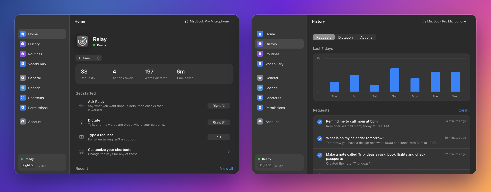
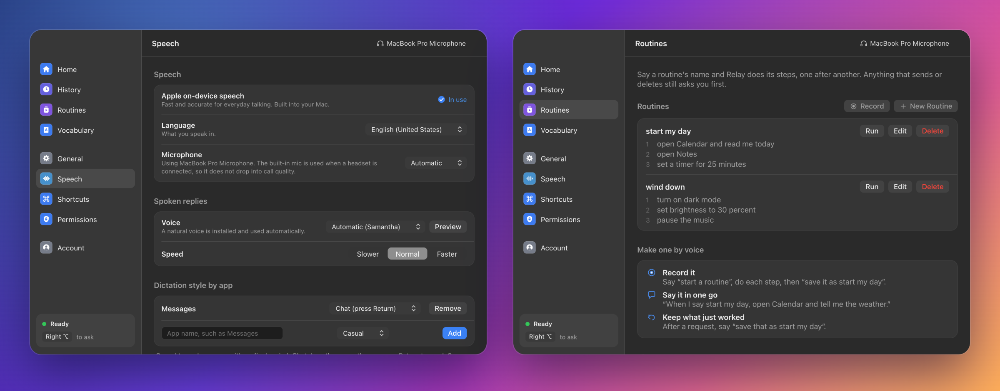
Models you can hold
Say "show me a human skull" or "make a model from this photo". The model floats on your screen with no window around it, and you choose how its buttons look.
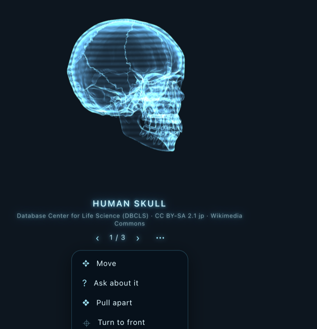
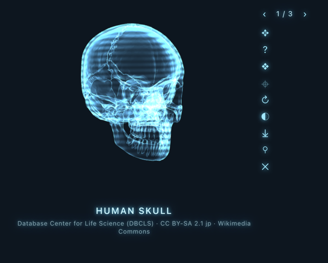
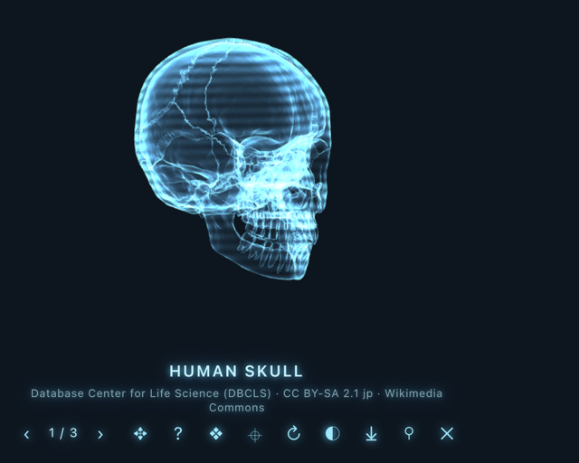
Pick the style in Settings, General, Holograms and hands. A hologram turns slowly by itself; after you move it, it stays still for 3 seconds, 10 seconds, 30 seconds or 2 minutes (your choice) and then turns again.
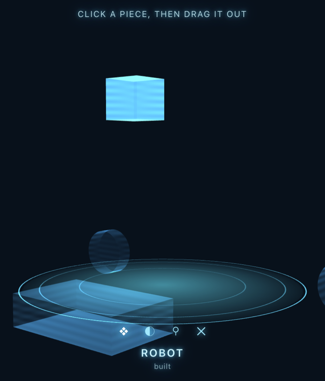
Pull it apart, ask about a piece
Pull a model into its parts, pick one, take it out and put it back. Point at a piece and ask "what is this?" and Relay sees the piece you marked.
- Combine. Drag one hologram onto another to make something new, then place the pieces where you want them.
- Photo to 3D. Relay picks the best of your photos and builds a model. Add a free Hugging Face token in Settings to use the better TRELLIS.2 engine.
- Drop a file. Drag an STL or GLB onto a hologram to add it; drop any other file to hand it to Relay with your next question.
- Draw in the air. With hand control on, pinch and drag in empty space to leave a glowing line, handy for pointing things out.
Design by voice, edit with your hands
Say what you want and Relay builds it from cubes, cylinders, spheres, cones, roofs, pyramids, rings and tubes. Holes cut like Tinkercad. Then open the editor to drag a shape, pull its squares to resize it, or type exact millimetres.
- Save for printing. STL, 3MF or STEP, scaled in millimetres and sitting on the bed.
- Send to your slicer. Relay lists the ones you have: Bambu Studio, OrcaSlicer, PrusaSlicer, Cura, Creality Print, plus Fusion, FreeCAD and Blender.
- Undo and redo every change, or say "make the hole bigger".
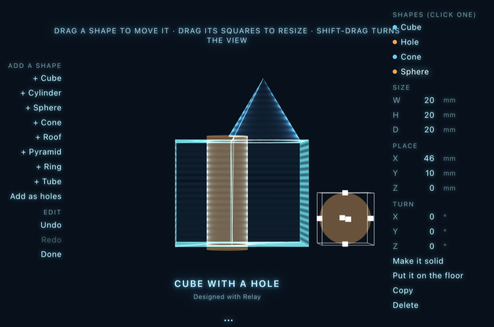
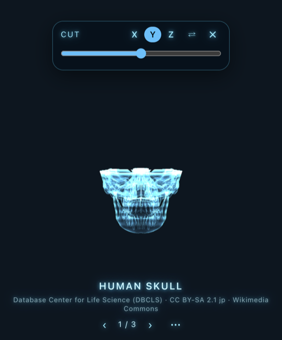
Cut it open, zoom with a pinch
Press Cut through it and a bar appears above the model. Slide it and a plane moves across the model, taking material away so you can see inside it or look at half of it. Pick the direction (X, Y or Z) and flip which side goes.
On a laptop trackpad, pinch in and out over a hologram to zoom it. The cut bar and its buttons grow when hand control sees your hands.
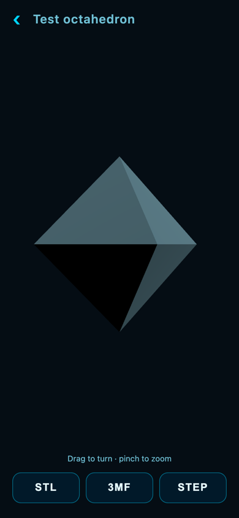
Take it with you
Open Relay Remote on your phone and tap the model icon. Every hologram you have open is listed. Turn it with one finger, pinch to zoom, slide the cut bar to see inside, and save it as STL, 3MF or STEP straight to your phone. For a model you designed, press Edit: change sizes and positions, add or remove shapes, or type what you want changed and Relay does it on your Mac. Remote stays private: pairing code, your own network, nothing in the cloud.
Your hands are the mouse
Switch on hand control and your camera follows your hand with a small glowing ring. The picture is read on your Mac and never saved or sent. Buttons grow bigger while a hand is in view.
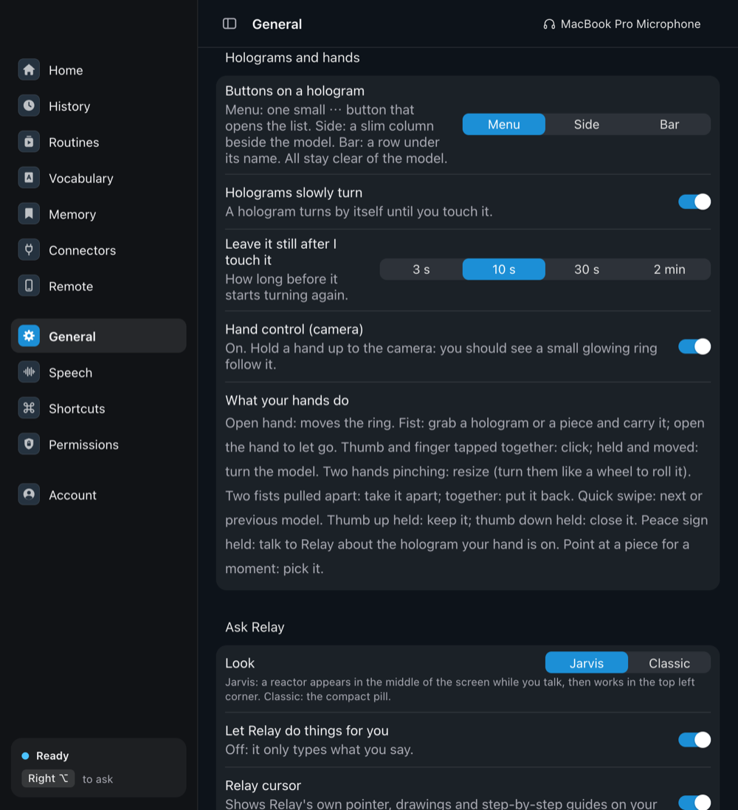
How to turn it on
- Click the Relay icon in the menu bar and choose Hand control (camera). Or use Settings, General, Holograms and hands.
- Allow the camera when macOS asks.
- Hold an open hand up. A small ring should follow it.
- Or just say "hands": Relay turns hand control on and opens the hand view in the top right. "Hide hands" puts it away; "stop hands" turns control off.
It is off until you turn it on, and it is experimental: lighting and distance matter.
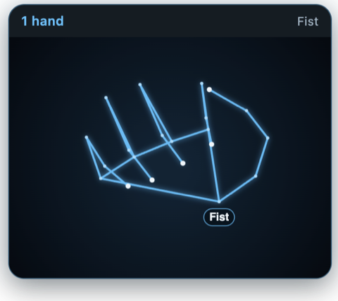
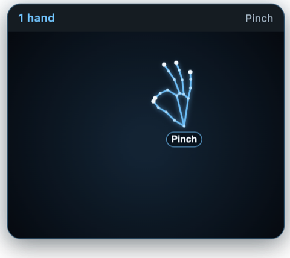
How it works
Your voice stays on your Mac until there is something for a model to do.
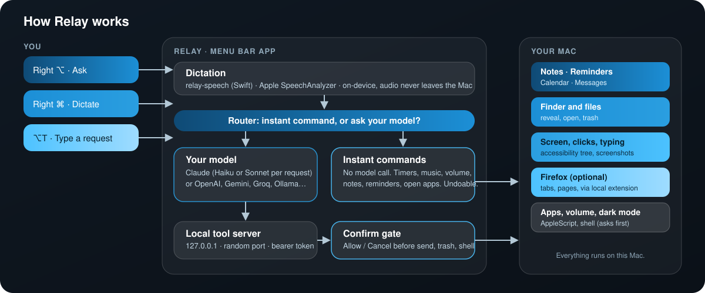
No API key. Your Claude plan.
Relay is free. By default it thinks with the Claude plan you already have, through your own Claude Code. Prefer something else? An API key or a local model works too.
Your Claude plan Default
No API key. Relay runs your own Claude Code, signed in to your Claude plan (Pro or Max), and gives it Mac tools through a local-only server. Relay never sees your password. Simple requests use a fast model and harder ones move up automatically.
Your own API key
Anthropic, OpenAI (the ChatGPT API), Google Gemini, Groq, Mistral, xAI Grok, DeepSeek, or any OpenAI-compatible address. Paste a key once; it is stored encrypted with your Keychain. There is a Test button to check it.
Ollama Free and local
Run a model on your own Mac. Nothing leaves your machine. Pick one with tool support, and a vision model if you want screenshots.
Built in the open
The numbers below are drawn from the repository itself.
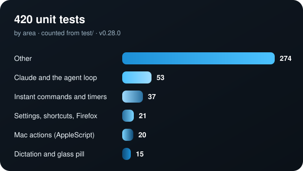
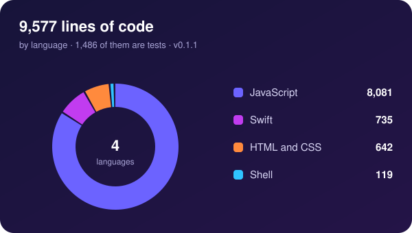
Get Relay
Needs macOS 26 or later. Apple Silicon (arm64) and Intel (x64) builds are on every release.
.dmg for your Mac from the latest release and drag Relay to Applications.Right ⌥ and talk.xattr -dr com.apple.quarantine /Applications/Relay.app # if macOS still refuses to open itQuestions
Is Relay really free?
Yes. It is open source under the MIT license. The only cost is the model: your existing Claude plan (nothing extra), an API key (billed per use by that service), or Ollama (free, runs on your Mac).
Does my voice leave my Mac?
No. Dictation uses Apple's on-device speech recognition. Only the resulting words are sent to the model you picked, and only when you ask Relay to do something.
Do I need an API key?
No. By default Relay runs your own Claude Code, signed in to your Claude plan, so there is nothing extra to pay Relay and no key to paste. API keys (Anthropic, OpenAI, Gemini, Groq, Mistral, xAI, DeepSeek, any OpenAI-compatible address) and local Ollama models are options in Account.
Is this approved by Anthropic? Could it stop working?
No, Relay is an independent project, not made or endorsed by Anthropic. It works by running the real Claude Code on your Mac with your own sign-in; Relay never sees your password. Anthropic's rules for third-party apps can change, and if they do, an API key or a local model keeps Relay working. ChatGPT plans are not supported: for OpenAI, use an API key (billed separately from ChatGPT Plus).
Why does macOS warn me when I open it?
Relay is not notarized by Apple, which needs a paid developer account. Right-click it and choose Open, or run the xattr command above. You can also read and build the source yourself.
Does it work on Windows, Linux or older Macs?
No. Dictation and the glass pill use macOS 26 features, and the actions are built on AppleScript and Accessibility, so Relay is Mac only for now.
Is it affiliated with Anthropic, Talkify or Octaflow?
No. Relay is an independent project. It began as a companion for Talkify, and its window follows Octaflow's layout with original code, name and icon.
Something did not work. What do I do?
Open History, then Actions. It lists every step Relay took and any error. Then open an issue with what it shows.
Try it. It is yours to change.
Star the repo, read the code, send a fix.